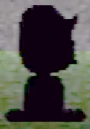

Turning into a "shadow monster man" is a gameplay mechanic of Petscop that allows certain additional interactions with places on and under the Newmaker Plane. Marvin and Paul both use it at some points in the series.
It appears to initially come from a glitch when playing the game. Part of the note, from one author, describes walking downstairs somewhere and turning right turning the player into a "shadow monster man". This refers to how to obtain this shadow state, in that walking down the stairs of the Flower Shack and walking right at the very bottom snaps the player up to the base ground level while still being completely black. This glitch appears to be that the stairs gradually darken the player sprite, but the darkness is not properly reverted when moving in an unintended way off the stairs. Moving back onto the stairs and walking back up normally reverts the darkening of the sprite.
Despite the buggy nature and origin of turning into a "shadow monster man", it appears to intentionally affect other parts of the game.
Normally, the windmill on the Newmaker Plane only appears as a translucent, vibrating foundation, with the only way to see the windmill otherwise to look at the screen in the tool room. However, under the effects of being a shadow monster man, going to the windmill's location will show the full windmill, and allow it to be entered and interacted with inside.
The underground tunnel with the road has cars driving out of it, though while a player stands in the middle of the road, cars do not drive past. A player that is currently a shadow monster man, however, will get hit by a glowing orange car if they try to cross the road. The guardian disappears, no longer allowing movement, and the camera slowly moves upwards.
{kind=link}
{kind=link}